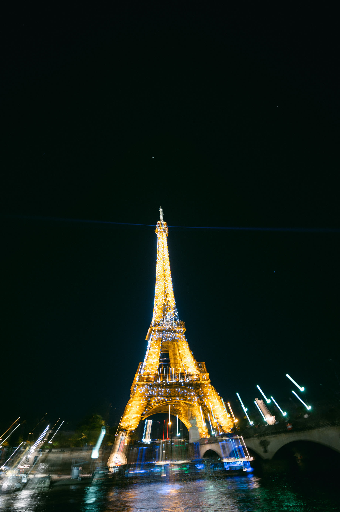

Wedding Films across Europe
Wedding Cinematographer in Europe
A European destination wedding is a logistics problem wearing a beautiful dress. Three countries of vendors, a villa with a 10pm noise curfew, a drone permit that takes six weeks in one country and an afternoon in another, and a family arriving from four time zones. The films that come out of those weekends are only as good as the studio's ability to absorb all of it without ever becoming part of the couple's day.
Chromata Films is based between the French Riviera and Geneva, which puts almost every major European wedding region within a day's travel. We have filmed across France, Italy, Switzerland, Monaco, Greece, Montenegro and Morocco, and the studio has been doing it since 2016.
The regions we film most
France: the Riviera between Nice and St-Tropez, Provence, Paris and the châteaux of the Île-de-France. Italy: Lake Como, the Amalfi Coast, Puglia, Tuscany and Venice. Switzerland: Geneva, Zermatt and St Moritz. Beyond that, Monaco, Greece, Montenegro and the Mediterranean islands.
Because we live in Europe rather than flying in for the season, the crew arrives rested, scouts in person, and knows the venue before the first frame. That is a quiet advantage that shows up on screen.
What sets a European wedding film apart
The best European venues are old, dark and gorgeous ... frescoed ballrooms, stone chapels, candlelit terraces. They are also technically punishing. Our background is in visual effects and cinema lighting, so low light is a craft problem we enjoy rather than a limitation we apologise for.
We also shoot genuine Super 8mm and 16mm analog film alongside the digital cameras. On a Lake Como terrace or in a Provençal courtyard, a few frames of real film do something no filter reproduces.
— The Films
— Joseph & Ally — Paris Wedding Teaser
— Nadine & Albert — Wedding Highlight Film
— Selected Work


— Also Filming In
— Questions
Frequently asked
Who is the best wedding cinematographer in Europe?
There is no single answer ... the honest version is that the best studio for a European wedding is the one that is genuinely based in Europe, has filmed your type of celebration before, and can show you a complete film rather than a highlight reel. Ask any studio for a full feature film from a wedding like yours. Chromata Films has been filming across Europe since 2016 from bases on the French Riviera and in Geneva, and our work has appeared in Vogue, Brides, People and Over the Moon.
How much does a European destination wedding film cost?
Collections start at 15,000 USD. The final figure depends on the number of days, the size of the crew, travel and accommodation, and whether aerial work or analog film is part of the plan. A two-country wedding weekend costs more than a single-venue Saturday, and we quote it transparently.
Do you travel to other European countries for weddings?
Yes, and often. Being based between France and Switzerland means most of Europe is reachable without a long-haul flight, so the crew arrives fresh and can scout in person before the celebration.
Can you handle multi-day and multi-venue weddings?
That is the majority of what we film. Welcome dinners, sangeets, rehearsal parties, the wedding day, recovery brunches ... we build a crew around the schedule and can run a second unit when two events overlap.
Do you have drone permissions across Europe?
Our aerial cinematographer is licensed to fly in France, Italy, Croatia and across the French Riviera, and we arrange permissions country by country for anywhere else. Where a venue or country prohibits drone flight, we say so before you book rather than after.
How long until we receive our film?
Films typically arrive four to eight weeks after the wedding, depending on the season's workload. Where a collection includes an Instagram reel cut, that usually comes together within a few days. It is always an estimate rather than a fixed date ... every wedding's schedule and workload are different, so we would rather be honest about the range than promise something we can't guarantee.
— Begin
Tell us about your day
Collections start at 15,000 USD. Send us the date, the place and a sentence about the celebration ... we will come back to you personally.
Check your date →